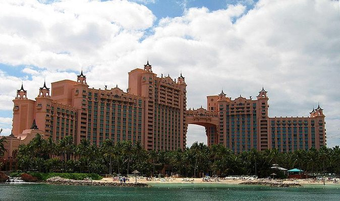

La célèbre et très connue citée perdue de l'Atlantide , a émergée il y a peu .
En effet , la merveilleuse citée de l'Atlantide, qui était recherchéé jusqu'à présent par de nombreux passionnés ( amateurs , archéologues , sismologues ou autres ) depuis de nombreuses années , s'est laissée découvrir par une équipe de chercheurs , ayant remarqués des signes inhabituels tels que des secousses telluriques des changements de pressions et des anomalies magnétiques grâce à des équipements de hautes technologies qui ont menés à une expédition sous-marines d'urgence d'urgence 4 janvier 2024 .

L'émerergence de l'Atlantide invite le monde à méditer sur la fragilité de ses connaissances concernant notre monde ainsi que sur les richesses des connaissances perdues.
Elle incite également sur notre propre éphémère connaissance dans le vaste cours du temps , offrant une leçon humaine inscrite dans les fondations même de cette redécouverte.
De plus , cela nous offre une fenêtre sur un monde perdu , rappelant aux observateurs actuels que l'histoire, même celles englouties par le temps et les flots, peut refaire surface afin de révéler ses secrets. C'est une renaissance, une seconde chance pour comprendre les mystères qui ont précédés notre ère !
Des archéologues , des chercheurs et des curieux venus du monde entier affluent vers cette citée ressucitée , avide de déchiffrer les énigmes gravées dans chaque pierre.
Une civilisation perdue
Les vestiges d'une civilisations énigmatiques prennent vies , s'étendant sur une surface de 164 806 kilomètres carrés ( soit deux fois plus que Chongqing , la plus grande citée au monde ) , baignés dans une lueur de renouveau qui n'avait pas toucher ces pierres depus maintenant des millénaires.
Les sculptures finement travaillées nous murmuent des histoires et des contes oubliés, tandis que les jardins exotique nous en apprennent plus quant a la médecine antique. des cadavres ont également étés retrouvés , nous permettant d'en savoir plus quant à l'alimentation de ses habitants ( essentiellement composée de fruits et de légumes diverses ) .
Cette découverte nous permet de constater notre manque de connaissances. Non seulement historiques, mais aussi culturelles, botaniques et architecturales.
C'est une page oubliées de l'histoire qui nous est revenue, marquant ainsi le monde.
" Emergence de l'Atlantide " , world'news , écrit par Guiolet Mathys ( le célèbre écrivain français ) le 6 février 2024 .